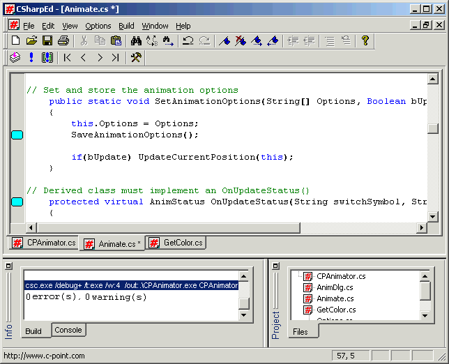

C# Редактор
Автор: Alex Davidovic.

Antechinus - это первый профессиональный
редактор C# поддерживающий новый язык
программирования от Microsoft' C# (C Sharp). Редактор
напоминает Visual C++ со всеми его необходимыми
возможностями для редактирования, а так же
позволяет компилировать и запускать Ваши
приложения в своей оболочке. Этот редактор уже
завоевал признание многих разработчиков (в том
числе и меня), которые используют C#.
- Версия 2.1
- Исталляция в c:\Program Files\...
- Адресация вложенных пробелов в именах
дирректорий
- Antechinus редактор C# стал многооконным
- Информация о версии/производителе исправлена
- Версия 2.0
- Улучшен многодокументный интерфейс
- Простая, однокликовая навигация между
документами
- Стало возможным создавать проекты
- Улучшено взаимодействие со средствами .Net
- В проекты можно добавлять библиотеки и
включаемые модули.
- Версия 1.0
- Добавлена возможность компиляции из командной
строки
- Редактор C# позволяет компилировать и запускать
приложения прямо из своей оболочки.
- Неограниченный откат действий (undo/redo)
- 2 уровня закладок
- Добавлено окно навигации по ошибкам после
компиляции
- Добавлена система выделения операторов
различными цветами
- Окна редактора можно разделить на несколько
частей, для одновременного редактирования
нескольких фрагментов одного и того же файла
- Visual Studio-подобное "auto-indent" - смещение вправо
при нажатии Enter в редакторе.
Downloads
Скачать
редактор - 584 Kb
|